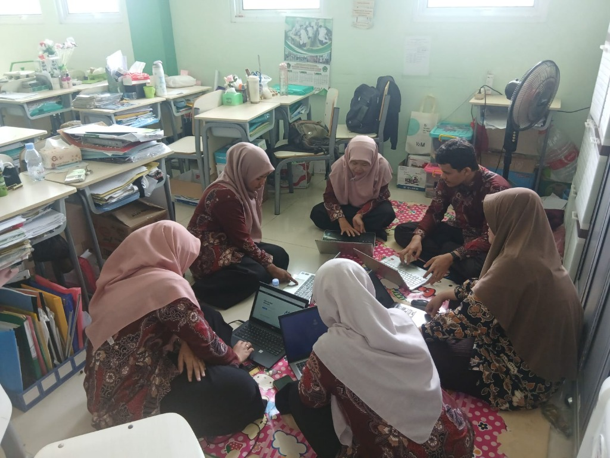
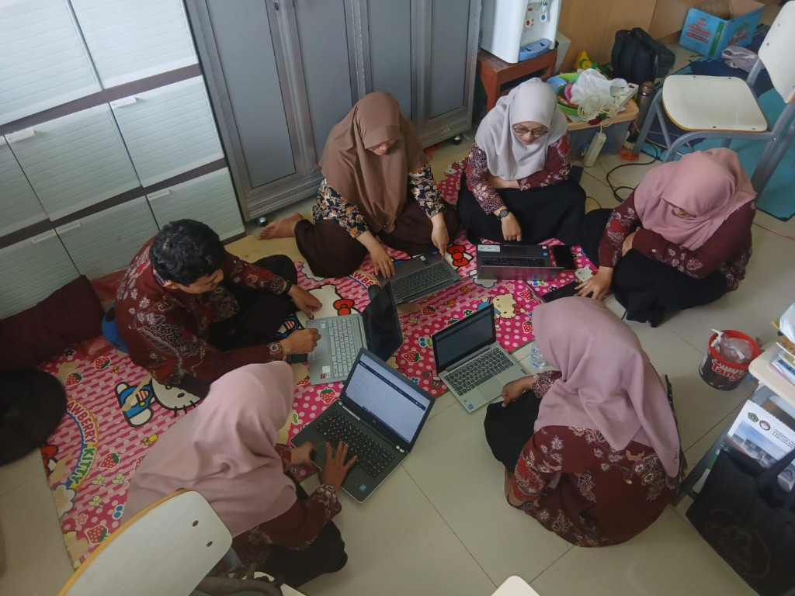
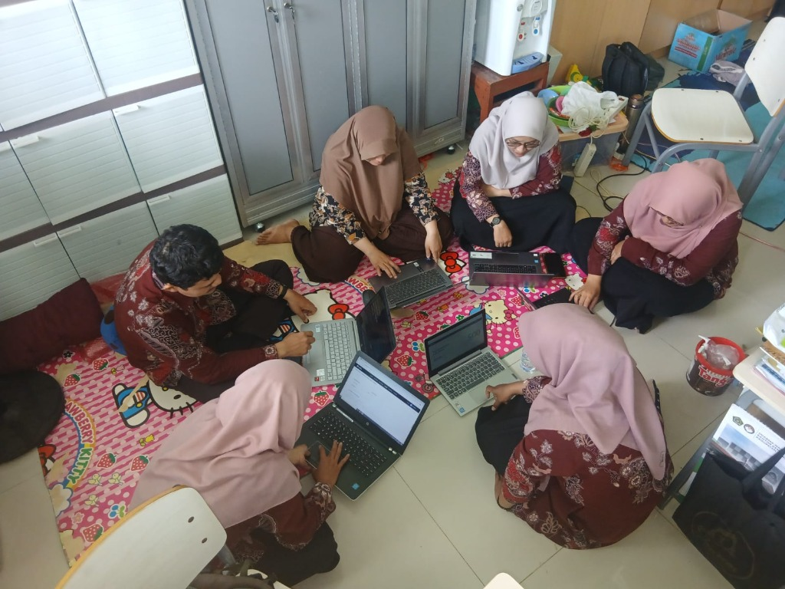
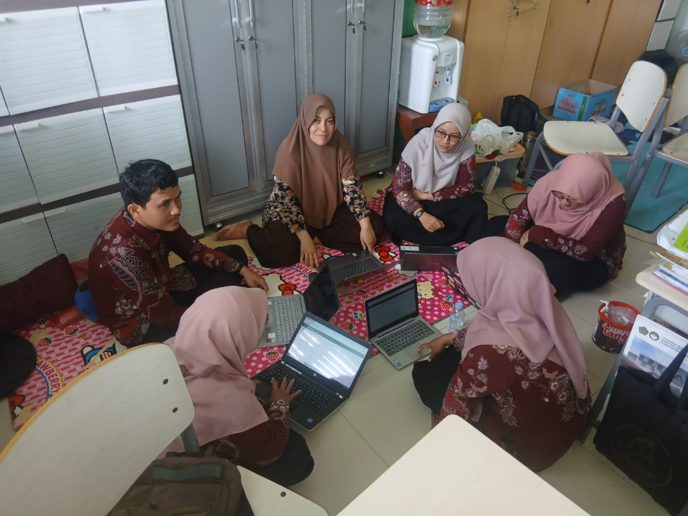

Potret Kebersamaan Pengimbasan di MTsN 6 Demak
Dokumentasi langsung sesi pelatihan dan pendampingan pembuatan Canvas pembelajaran bersama Dewan Guru MTs Negeri 6 Demak.

Praktik Kolaboratif Dewan Guru di MTsN 6 Demak
Suasana interaktif saat guru mempraktikkan transfer teks hasil prompt AI ke dalam lembar kerja Canva for Education.
Klik untuk memperbesar foto
Diskusi Alur Kanvas Bersama
Belajar santai dan fokus membuka laptop masing-masing untuk memahami blok-blok canvas.

Merumuskan Prompt Terstruktur
Melatih penyusunan instruksi AI yang mendalam agar draf modul tidak dangkal dan tepat sasaran.

Pendampingan Langsung Rekan Guru
Verifikasi materi madrasah, validasi dalil syar'i, dan review hasil draf lembar modul.
Deskripsi Kegiatan: “Membuat Canvas” Pembelajaran AI
Mengapa pembuatan canvas menjadi kunci utama dalam pengimbasan GEMA AI Kementerian Agama RI? Berikut adalah filosofi, pendekatan, dan 3 dimensi praktiknya.
1. Prompting Design Canvas
Mengubah kebiasaan guru dari yang semula “bertanya bebas tanpa arah” menjadi perumusan instruksi terstruktur berbasis kanvas. Guru memetakan Role, Task, Context, Constraints, dan Output Format sebelum mengeksekusinya ke AI.
2. Gemini Workspace Canvas
Menggunakan ruang kerja fleksibel Google Gemini untuk mengorganisir peta konsep tema ajar, menyusun alur apersepsi, mengelompokkan bank soal HOTS, serta merevisi draf modul secara iteratif.
3. Visual Media Canvas (Canva)
Naskah hasil kurasi AI ditransfer ke lembar kerja Canva for Education. Guru langsung mendesain infografis pembelajaran, LKPD interaktif, kartu kuis, serta slide presentasi estetik untuk peserta didik.
Prinsip “Human in The Loop” Guru Madrasah
AI hanya berfungsi sebagai mitra perancang *(co-pilot)*. Guru madrasah tetap memegang kendali penuh dalam memvalidasi kebenaran dalil agama, kesantunan bahasa, dan penanaman akhlak mulia kepada para murid.
Struktur “AI Learning Design Canvas” MTsN 6 Demak
Kerangka kanvas 6 blok yang dilatihkan kepada dewan guru saat merancang sebuah modul atau materi pembelajaran digital.
Capaian & Tujuan (TP)
Menetapkan materi pokok kurikulum, indikator ketercapaian, dan profil pelajar rahmatan lil ‘alamin yang ingin ditanamkan pada peserta didik.
Profil Siswa & Diferensiasi
Memetakan karakteristik siswa MTs usia 12–15 tahun yang menyukai simulasi interaktif, tantangan kelompok, dan gaya belajar visual-kinestetik.
Persona & Peran AI
Memberi persona jelas kepada AI: Guru penggerak madrasah yang inspiratif, santun, bersahabat, dan ahli menyusun skenario pembelajaran aktif.
Batasan Syariat & Kurikulum
Memberikan rambu-rambu ketat agar AI tidak halusinasi: dalil Al-Qur'an dan Hadis harus shahih, mengacu pada KMA Kementerian Agama RI.
Aktivitas & Studi Kasus
Merancang studi kasus kontekstual yang terjadi di kehidupan nyata siswa saat shalat berjamaah di masjid madrasah atau desa mereka.
Output Visual Canva
Format akhir instruksional dibuat siap pakai untuk layout Canva: LKPD infografis 1 halaman A4 dan storyboard presentasi 5 slide.
Coba Generator Template Prompt Canvas
Pilih mata pelajaran, jenjang kelas, dan target produk Anda. Salin prompt terstruktur untuk langsung dicoba di Google Gemini.